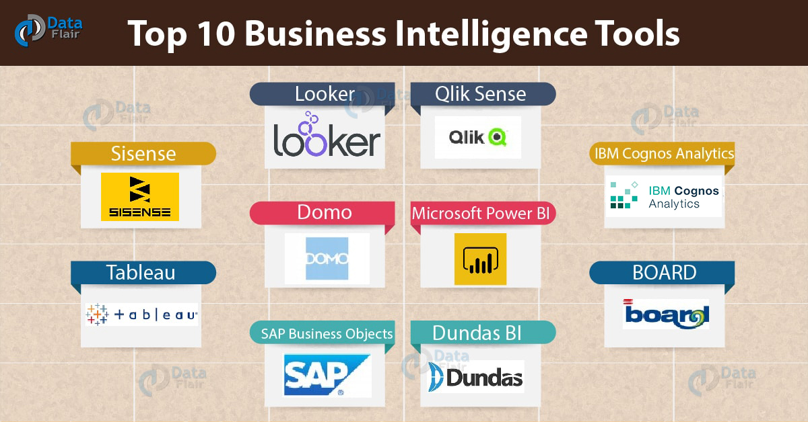
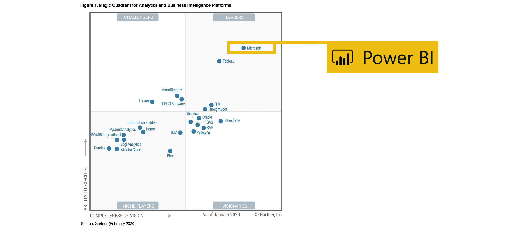
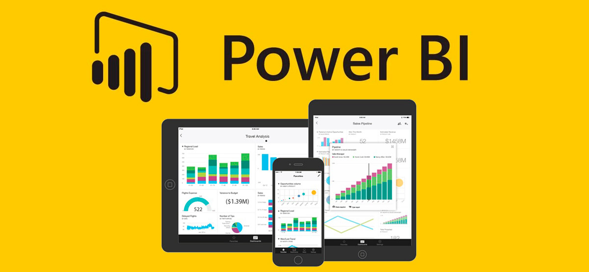
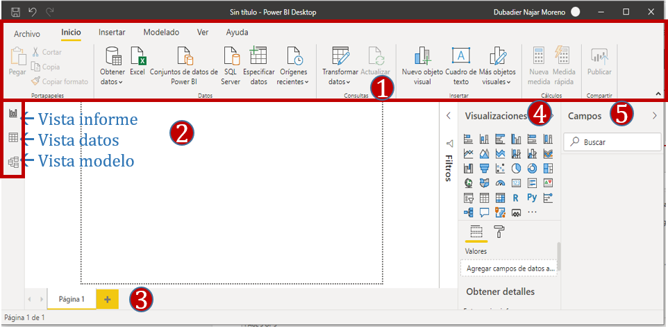

Introducción a Power BI (PBI)¶
90 min | Última modificación: Enero 08, 2020.
Herramientas de analítica de datos¶
La visualización de datos puede ayudar a contar la historia, transmitiendo problemas complejos con claridad. Puede desempeñar un papel clave para identificar la información importante del ruido, incluidos los valores atípicos y las anomalías.
Puede ayudarlo a dominar su creciente volumen de datos. La interacción visual con grandes conjuntos de datos puede simplificar el análisis, revelando nuevos conocimientos empresariales.
La visualización de datos puede ayudarlo a hacer todo eso, si tiene la herramienta adecuada. Una herramienta de visualización de datos inteligente que incluya analítica mejorada basada en aprendizaje autónomo integrado debe tener el poder de ayudarlo con todos los pasos para analizar y transmitir información, comenzando con la preparación de datos. Tradicionalmente, la preparación de datos para el análisis ha sido un proceso manual, a menudo lento, frustrante y propenso a errores.
Piense en una herramienta que pueda automatizar la preparación de datos al recopilar información de una o más fuentes y consolidarla. Esto acelera el proceso y reduce la posibilidad de errores. La herramienta también debería poder aumentar su análisis al recomendar la inclusión de nuevos conjuntos de datos en la revisión para obtener resultados más precisos.

Ver detalles de las aplicaciones
Cuadrante mágico de Gartner 2020

Descripción del Cuadrante: * Las empresas líderes son vendedores que son fuertes en la amplitud y profundidad de las capacidades de sus plataformas BI y pueden suministrar consultoría a las organizaciones de tal manera que puedan tener constante soporte en su estrategia BI.
Por otro lado, se tienen a las empresas retadoras, las cuales se están ubicando con éxito en el mercado a pesar de que están limitadas a casos específicos y sistemas técnicos concretos, además de deficiencias en la integración estratégica de sus productos, marketing, canales de ventas y presencia Geográfica.
Las empresas visionarias son vendedores que tienen una fuerte visión sobre la importancia de hacer llegar al usuario una plataforma BI-Analytics lo suficientemente abierta y flexible fácilmente integrada a los procesos de la organización, además de profundizar en áreas específicas. No obstante, presentan brechas en cuanto a la amplitud de funcionalidades que muchas veces los usuarios requieren a su paso. Su fortaleza aún así está en su vocación innovadora.
Las empresas enfocadas en nichos son aquellas que lo hacen bien en un segmento específico del mercado de plataformas.
Power BI¶

Power BI una herramienta creada por Microsoft para ayudar a analistas y directivos a crear informes y cuadros de mando. En la actualidad tenemos un escenario en el que el tratamiento y visualización de datos es una necesidad creciente para empresas y estructuras organizativas. Microsoft Power BI responde a esta necesidad, ya que permite crear informes analíticos con alto nivel de interactividad y dinamismo.
Power BI es una herramienta robusta y de grado empresarial. Está listo para modelado extensivo y analítico en tiempo real y para la programación de usuarios. Power BI puede ser el motor que nos impulse a la toma de decisiones.
Las partes de Power BI¶
Power BI consta de varios elementos que funcionan juntos, empezando por estos tres conceptos básicos:
Una aplicación de escritorio de Windows denominada Power BI Desktop.
Un servicio SaaS en línea (Software as a Service) denominado servicio Power BI.
Aplicaciones móviles de Power BI para dispositivos Windows, iOS y Android

Estos tres elementos, —Power BI Desktop, el servicio y las aplicaciones móviles—, están diseñados para permitirle crear, compartir y usar información empresarial de la forma que le resulte más eficaz para usted y para su rol.
Además de estos tres elementos, Power BI también incluye otros dos:
Power BI Report Builder, para crear informes paginados y compartirlos en el servicio Power BI. Obtenga más información sobre los informes paginados más adelante en este artículo.
Power BI Report Server, un servidor de informes local en el que puede publicar los informes de Power BI, después de crearlos en Power BI Desktop. Obtenga más información sobre Power BI Report Server más adelante en este artículo.
¿Qué es Power BI Desktop?¶
Power BI Desktop es una aplicación gratuita que se puede instalar en el equipo local y que permite conectarse a los datos, transformarlos y visualizarlos. Con Power BI Desktop, puede conectarse a varios orígenes de datos diferentes y combinarlos (lo que se suele denominar modelado) en un modelo de datos. Este modelo de datos permite compilar objetos visuales y colecciones de objetos visuales que se pueden compartir como informes con otras personas de dentro de la organización. La mayoría de los usuarios que trabajan en proyectos de inteligencia empresarial usan Power BI Desktop para crear informes y luego usan el servicio Power BI para compartir los informes con otros.
Los usos más comunes de Power BI Desktop son los siguientes:
Conectar a datos

Transformar y limpiar datos, para crear un modelo de datos En Power BI Desktop, puede limpiar y transformar los datos con el Editor de Power Query integrado.

Crear objetos visuales, como gráficos o grafos, que proporcionan representaciones visuales de los datos

Hay muchos tipos diferentes de objetos visuales entre los que elegir en Power BI Desktop

Crear informes que son colecciones de objetos visuales, en una o varias páginas de informes

Compartir informes con otros usuarios mediante el servicio Power BI

Los usuarios que suelen ser responsables de esas tareas se suelen considerar analistas de datos (a los que a veces se hace referencia con el término analistas) o profesionales de inteligencia empresarial (a menudo conocidos como creadores de informes). Pero muchas personas que no se consideran analistas ni creadores de informes usan Power BI Desktop para crear informes atractivos o para extraer datos de varios orígenes y crear modelos de datos que luego pueden compartir con sus compañeros de trabajo y organizaciones.
Roles en un proyecto BI con Power BI¶
Microsoft Power BI es una herramienta capaz de realizar el ciclo completo de un proyecto de Business Intelligence.
Roles en el negocio¶
Expertos en los orígenes de datos existentes, que nos dirán cómo y dónde conectar.
Directivos y expertos en el negocio como tal, que son posiblemente las personas más interesadas en obtener valor a partir del informe creado con Power BI.
Los analistas que consumen los informes actuales, los que existen antes de comenzar a trabajar con Power BI.
El personal administrativo conocedor de normas y procedimientos. Desde el lado de Power BI también nos encontramos con varios roles que van a depender de la función que se realice dentro del proyecto.
Roles en Power BI¶
Diseñador de conjuntos de datos, encargado de la conexión, extracción, transformación, carga y modelado de datos.
Diseñador de informes, encargado de dar vida a los informes utilizando tanto las visualizaciones como el modelo de datos.
El Administrador Power BI, que supervisa las tareas y controla la gestión de recursos.
Desde el servidor de Power BI, y en caso de adoptar íntegramente esta suite de herramientas, encontramos el rol de gestor de la colaboración desde el servidor Power BI, que se encarga de tareas de configuración del almacenamiento, tareas de colaboración y seguridad en el acceso a los elementos almacenados en la nube de Power BI. El trabajo coordinado de todos estos roles posibilita realizar con éxito todas las etapas del ciclo de vida de Power BI.
Instalación de Power BI¶
Descargue e instale la App Power BI Desktop desde la siguiente URL https://powerbi.microsoft.com/es-es/desktop/
Interfaces de Power BI Desktop¶
Al iniciar Power BI Desktop, aparecerá el cuadro de diálogo Introducción, que proporciona vínculos útiles a foros, blogs y vídeos introductorios.
En Power BI Desktop, comenzará a crear informes en la vista Informe. Trabajarás en cinco áreas principales:

Cinta de opciones: muestra las tareas comunes asociadas a informes y visualizaciones.
Vistas: La vista actual se indica mediante la barra amarilla situada a la izquierda y puede cambiar de vista si selecciona cualquiera de los iconos.
2.1. La Visa informe o lienz, es la zona donde se crean y organizan las visualizaciones.
2.2. La vista datos le permite ver todos los datos disponibles en el informe. Esta es una manera fácil de comprobar rápidamente los tipos de datos y validar los datos.
2.3. La vista modelo permite establecer visualmente la relación entre tablas o elementos. Una relación es donde dos o más tablas están vinculadas entre sí porque contienen datos relacionados. Esto permite a los usuarios ejecutar consultas para datos relacionados en varias tablas.
Pestaña Páginas: situada en la parte inferior de la página, esta área es donde seleccionaría o agregaría una página de informe.
Panel Visualizaciones: donde puede cambiar visualizaciones, personalizar colores o ejes, aplicar filtros, arrastrar campos y mucho más.
Panel Campos: donde los elementos de consulta y los filtros se pueden arrastrar a la vista Informe o arrastrarse al área Filtros del panel Visualizaciones.